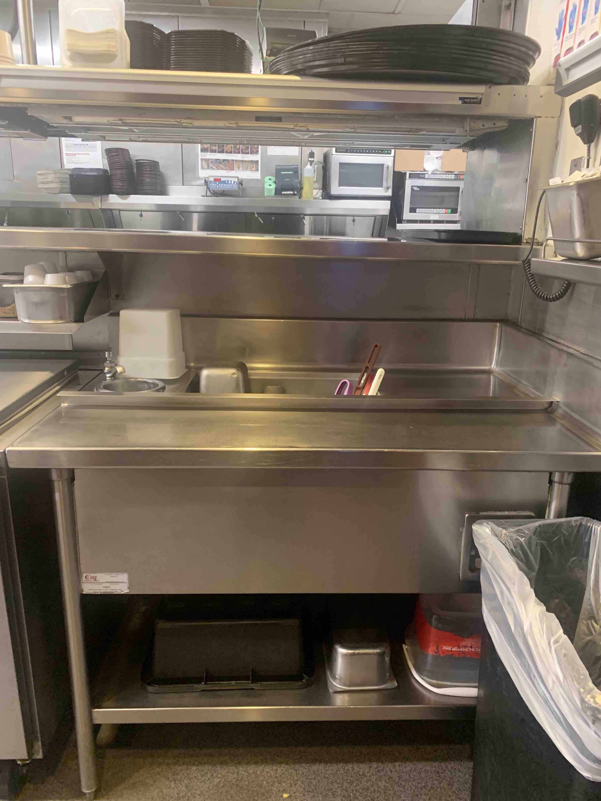
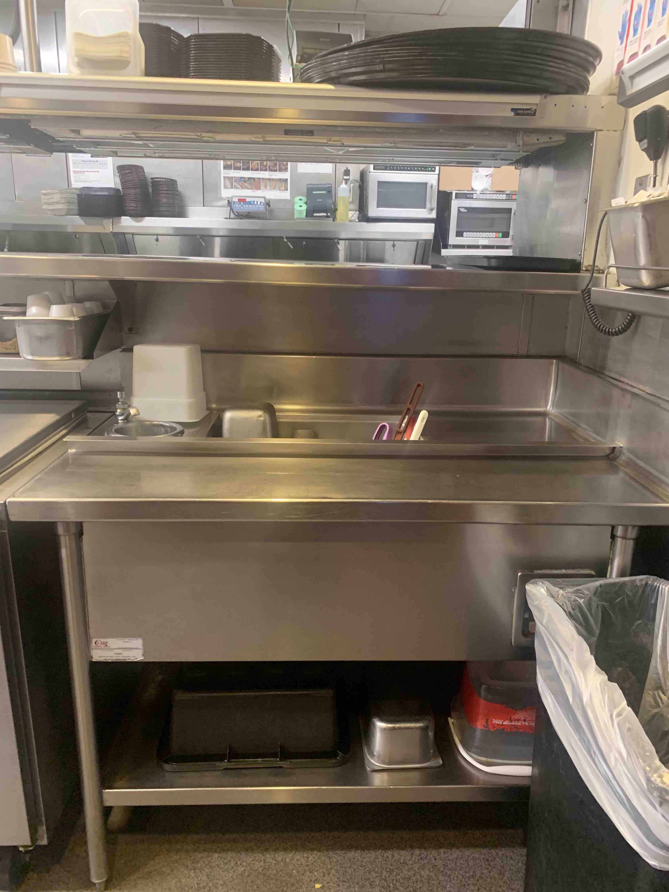
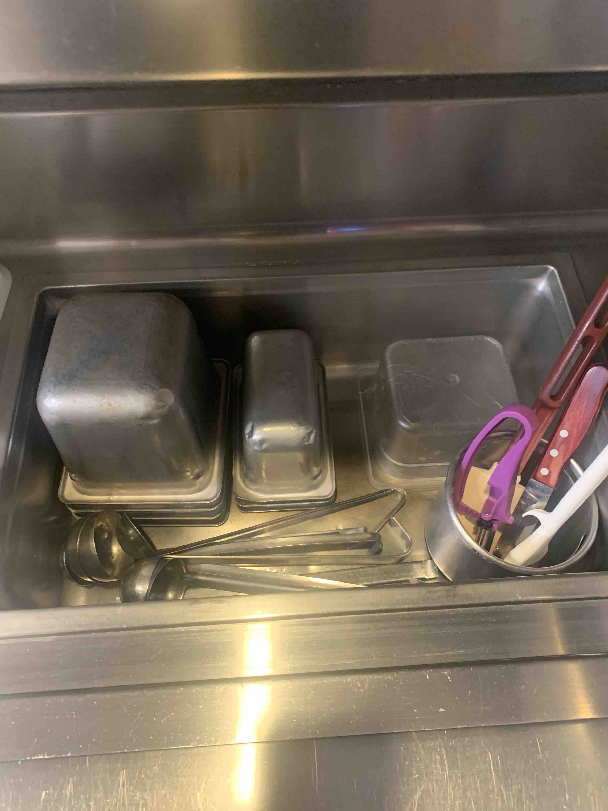
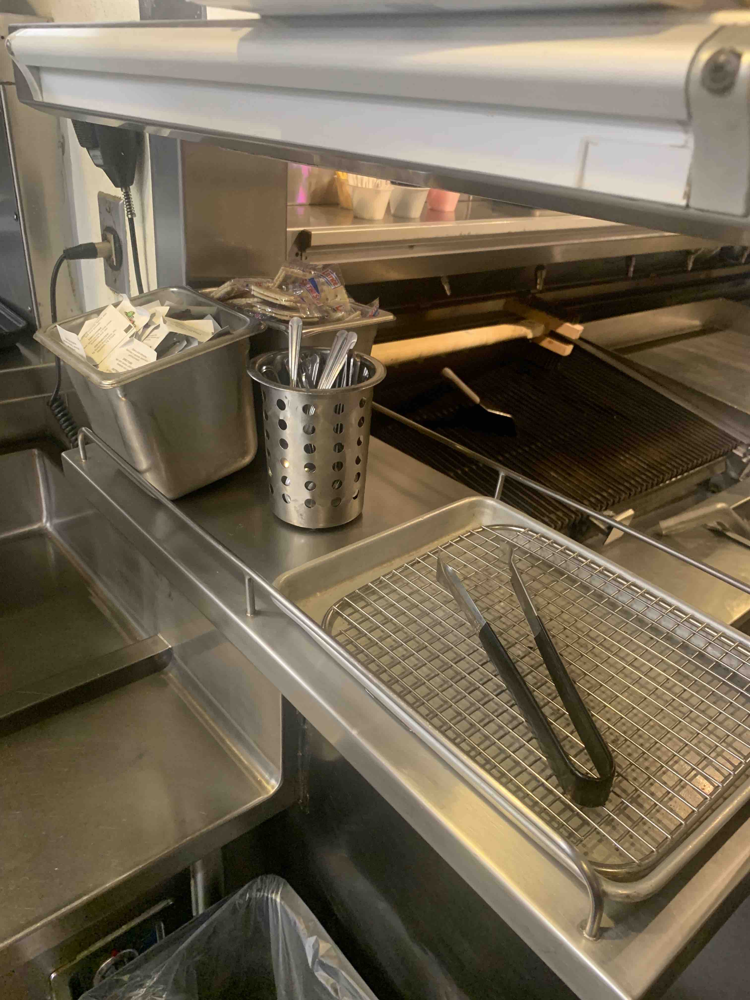

- It is very important before you start this backwork that you know for a fact we are done with it for the night.
- You may ask a manager if you are not sure.
- Turn off the station using the knob. The indicator light should be OFF
- Turn the drain on underneath the station by turning the red handled knob attached to the hose.
- Fill up crackers. They are found on the right side of the shelf under the salad window.
- Fill up wet napkins. They are found in the middle upper shelf under the kids fridge.
- Empty your sanitizer bucket and take it and the skewer pan to dish.
- Take the bus pan to dish and empty out any dishes that may be in it.
- Take the buspan back to hot expo right.
- Empty the 'trash bin' and put it into the bus pan.
- Dump the contents of hot expo right into the trash. If we still need something, save it in a monkey bowl and put it in the window.
- Place the empty expo containers into the bus pan.
- Place the ladels into the bus pan.
- Turn off the water for the scoop, and put any utencils from there into the bus pan.
- Empty out the water from the scoop holder (Its a removable circular holder) and add it to the bus pan.
- Put the grate, pan, and/or tongs from the prio-window into the bus pan.
- Do not give dish your dividers, they will get lost!
- Give this bus pan to dish, be respectful about where you leave it. Do not just leave it in the mucking station!
- Now you need to clean the inside of the expo station.
- Get a Scrubbie (green or metal works) and a small bucket for soap.
- Scrub your dividers clean.
- Clean the top and bottom of the station, ensuring you do not have any black marks or grease left over.
- You can use this scrubbie to clean the window above the station (arms length is just fine), the ticket holders, and the prio-window.
- Once you have scrubbed the station clean, use a towel to dry it.
- Usually dish will keep your bus pan contents together, however it can be incomplete or wrong sometimes.
- Here is a list of what you need in the station:
- 4 metal "six pans" (square, deep)
- 3 metal "nine pans" (rectangular, smallest)
- 5 ladels
- 1 plastic "six pan" (square, shallow)
- 2 dividers
- In the scoop holder, you will need:
- Pink Scoop
- Spatula
- Knife
- Butter Brush

- Most of the time, dish will not give you back the prio-window grate, pan, and tongs.
- The grate and pan can be found in dish on the green rack, on the middle shelf, to the left.
- Ladels can be found on the wall hanging over the sinks in dish.
- Your prio-window should be organized like so:

- Make sure you have a clean bus pan, skewer pan (metal, shallow, "third pan"), and red sanitation bucket;
and make sure they are flipped upside-down.
- Your station should look like the picture above.